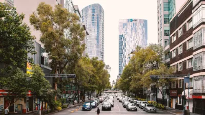

Multas CDMX: cómo consultar y pagar tus multas de tránsito
Descubre cómo consultar y pagar tus infracciones CDMX de tránsito de forma rápida y sencilla en la Ciudad de México.
Leer másAviso importante: Este sitio web es un recurso informativo independiente y no está afiliado ni asociado con el gobierno de México o cualquier entidad gubernamental oficial. La información proporcionada tiene fines educativos e informativos únicamente.
Metro CDMX, transporte público y tendencias futuras
Historia, compra de autos usados y ahorro de combustible
Reglas y señales de tránsito para conducir seguro
GPS, mapas satelitales y autos eléctricos
Rutas turísticas y consejos para viajes por carretera
Descubre cómo consultar y pagar tus infracciones CDMX de tránsito de forma rápida y sencilla en la Ciudad de México.
Leer másDescubre cuáles son los vehículos más veloces del planeta y las tecnologías que los hacen tan impresionantes.
Leer másExplicación detallada sobre el funcionamiento de los motores eléctricos y su impacto en la industria automotriz.
Leer másUn recorrido por la fascinante evolución de los automóviles a lo largo de la historia.
Leer másAnálisis de los modelos de automóviles más populares en el mercado mexicano.
Leer másGuía práctica para adquirir un vehículo de segunda mano evitando problemas y estafas.
Leer másTécnicas efectivas para reducir el consumo de gasolina y optimizar el funcionamiento del vehículo.
Leer másSelección de las rutas más escénicas y seguras para disfrutar de un viaje por carretera en el país.
Leer másExplicación técnica sobre los sistemas de control de velocidad y su papel en la seguridad vial.
Leer másResumen de las normativas esenciales que todo conductor debe conocer para circular legalmente.
Leer másGuía completa sobre la señalización vial en México y su significado.
Leer másRecorrido histórico por el desarrollo del sistema de transporte colectivo más importante de la capital.
Leer más
Visión de las próximas innovaciones en el transporte colectivo sustentable.
Leer másAnálisis de la problemática del congestionamiento vial y alternativas para mejorar la movilidad urbana.
Leer másHistoria y funcionamiento de los sistemas de posicionamiento global y su impacto en la movilidad.
Leer másExplicación del proceso de cartografía digital aplicada a la infraestructura vial.
Leer másVentajas ambientales, económicas y técnicas de los vehículos eléctricos frente a los convencionales.
Leer másSelección de lugares ideales para explorar en auto, con rutas recomendadas e información práctica.
Leer másLista de verificación y consejos para garantizar un trayecto sin contratiempos mecánicos.
Leer másGuía detallada sobre los trámites y consideraciones para viajar a países vecinos en vehículo.
Leer másRecorrido por la trayectoria de la competición automovilística más prestigiosa del mundo.
Leer más
Presentación de los trazados más emblemáticos del automovilismo internacional.
Leer másAnálisis técnico de las características que definen a los monoplazas de competición.
Leer más
Comparativa detallada entre vehículos de competición y automóviles convencionales.
Leer másRecopilación de las marcas más destacadas en el mundo de la velocidad.
Leer másAnálisis del impacto de esta competición en el desarrollo de la movilidad eléctrica.
Leer más